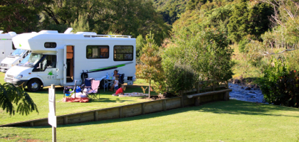

På vej hjem

Vores bedste Campingråd fra New Zealand
fredag den 28. marts 2008

Efter vores 2 måneder i camper på NZ, har vi samlet lidt ting sammen som andre måske kan have glæde af. Og nu har vi fået redigeret og skrevet alle rådene ned, så her kommer de:
Inden afrejse
Gennemse guider på Nettet og køb en Lonely Planet, de er meget præcise i deres beskrivelser af tingene. Bestil et Top 10 kort på deres hjemmeside http://www.topten.com, det giver 10 % rabat på overnatninger på Top Ten pladser, som er svære at komme udenom.
Bestil de første 2 overnatninger via Internettet hjemmefra, så I er sikre på at have en plads, specielt hvis I starter ud fra Auckland.
Bestilt færgeoverfart mellem nord og sydø, hvis I skal l besøge landet i højsæsonen : december januar.
Vi ankom 15. januar, og der var meget fint på Sydøen, men vi hørte at der var ret presset nordpå, så måske kunne det være en ide at køre mod strømmen som os i de travle måneder.
Det er en RIGTIG god ide at medbringe en GPS’er, de er ofte udsolgt, efter hvad vi har hørt, og vi har været utrolig glade for vores. Alle campingpladser er på, og den advarer mod fartkameraer. Det har desuden sparet os for at kigge på kort under kørslen. Vi har haft en TOMTOM med, og det har bare fungeret.
Startpakke :
Klemmer, vaskepulver (til koldt vand), krydderier, opvaskemiddel og børste, klude, universalrengøring, kaffe (Robert Harris har kaffe specielt til stempelkander, fås i supermarkeder.) Køkkenrulle, toiletpapir, toiletkemikalier, plastickasse til at bære opvask i, skærebræt, oliespray, folie og et par opbevaringsæsker i plastic til mad. Gummihandsker til tanktømning, gør det lidt mindre klamt. Adaptorer.
Campingmøbler kan I enten leje eller købe lige så billigt hos The Warehouse. Men de er rigtig gode at have med
I kan med fordel besøge The Warehouse, her kan man få alt lige fra soveposer til lakridser og til gode priser. Hvis man leder lidt kan man også finde DVD film med dansk tale, hvilket kan være godt til børnene. Hvis vi havde haft større børn med, ville vi have købt soverposer, en rygsæk og et lille telt, så vi kunne have overnattet på nogle at de fine campingpladser i Nationalparkerne. Der er også masser af fiskegrej, hvis man er til den slags
Der findes 2 slags informationscentre på New Zealand : I-sites og DOC. Det er en rigtig god ide at besøge disse centre som noget af det første, når man kommer til en ny by. DOC har gode pjecer om gåture og naturen i området, lige fra 20 minutter til to dages hike.
Selve campingturen :
Vi synes, at det har været godt at mixe mellem de mere luksuriøse pladser og de mere primitive. Pga. af børnene har vi faktisk ikke overnattet uden for campingpladser på turen, men det kan man sagtens. Hos DOC kan man købe små bøger med anvisninger på DOC campsites, det er som regel primitive men meget smukt beliggende pladser over hele landet.
Ellers har vi benyttet følgende guider : AA Explore New Zealand Travel Guide 2008 - en tyk bog, som vi fik hos udlejer og New Zealand’s best lesiure accommodation fra Holiday Parks association of New Zealand www.holidayparks.co.nz, som også har de mindre pladser med. De to guider har tilsammen fungeret rigtig godt.
De bedste campingpladser har efter vores mening været :
Luksus pladser med pool, hoppepuder og lignende:
Waihi Beach
Lake Taupo - begge Top 10
Mellem pladser, skønt beliggende med fine faciliteter:
Russell Top 10, besøg den endelig, tag færgen fra Opua, og bed om en plads med udsigt, vi boede på nummer 9, det var skønt.
Akaroa, bed igen om plads med udsigt - bestil i god tid.
Kauri Top 10, ligger inde midt i skoven ved en flod.
Hahei Beach Coromandel, skøn strand lige ud for pladsen.
Primitive men med strøm :
Curio Bay
Surat Bay på Catlinskysten
Glentanner ved Mount Cook
Lake Tekapo
Rapahoe på vestkysten.
- alle er på Sydøen, og alle er fantastisk beliggende.
Husk når I kommer til en campingplads, så bed om et kort over pladsen og gå jer en lille tur så I kan finde de bedste pladser. Nogen gange er der ikke noget spændende og så kan man bede om en plads nær bad, køkken eller legeplads alt afhængig af hvad der er vigtigst for jer, men ofte kan man finde et dejligt sted evt. med udsigt.
Det er en god ide at bestille plads i weekenderne på Nordøen. Ellers skal man bare booke en enkel nat, og så forlænge opholdet efterhånden.
Husk også at købe ind i de “store” byer. I kommer virkelig ud på landet, og mange steder skal man have proviant med til et par dage. Der er som regel ikke små butikker ved campingpladserne, og der ligger ikke lige en kiosk på næste hjørne.
Hvis I kan komme til det, så køb grøntsager ved boder ved vejen, de er billigere og bedre.
Vi har mest handlet i Woolworth og New World. Der er en kæde, der hedder Countdown, som har åben 24 timer alle ugens 7 dage. Discountkæden hedder Park’n’save.
Vi har haft vores vores egen bærbare computer med, og der har været WIFI på næsten alle pladserne, spørg evt. når I ringer. Priserne varierer meget. Der har været rart at kunne ringe til familie via SKYPE til 0 kr. fra camperen. Der er til gengæld ikke mobildækning overalt i landet.
OBS ! Hvis I ikke vil møde andre danskere skal I ikke bo på Top10, men generelt er vi danskere meget svære at undgå :-)
Andet udstyr :
Det er en god ide at tage nogle gode vandresko med til børn hjemmefra (Lasse Hjortnæs) Der er overraskende nok ikke et særlig godt udvalg her til små børn.
Vi har en Macpack rygbærer med til Stella, den har vi været glade for. Bollé solbriller til børnene er super. Husk solcreme med faktor 30 hele tiden og hatte/kasketter til alle, solen, brænder virkelig igennem, specielt på Sydøen.
I får brug for varmt tøj til om aftenen og regntøj, da der mange steder regner ganske ofte. Fleecetrøjer er helt sikkert et hit, men det lokale Icebreaker uldtøj er også rigtig godt. Vi købte varmt tøj i Christchurch, der har ret mange gode forretninger med outdoortøj.
Vi håber at ovenstående kan være en hjælp til andre. Det er helt sikkert langt fra en uudtømmelig liste, så hvis I har andre gode råd eller kommentarer, så kom endelig med dem i kommentarfeltet. Til glæde for andre danskere, der beslutter sig for at tage på tur til NZ :)
Tim og Camilla
Camper i NZ er en fantastisk ferieform. Du har din frihed til at gøre hvad du vil, og du har dit hjem med dig. Samtidig byder NZ på muligheder til alle temperamenter. Det kan kun anbefales.